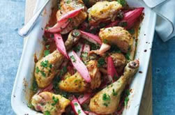

Nordic Chicken, with Rhubarb
Ingredients
1 organic or free-range chicken, cut into 8 pieces
Salt and freshly ground pepper
300g rhubarb
50g raw organic sugar
For the cucumber-radish salad:
1 cucumber, cut into small cubes
1 bunch of radish, sliced
For the cucumber-radish salad dressing:
100ml goats' milk yoghurt
1 garlic clove, finely chopped
2tbsp chopped mint
Method
Preheat the oven to 200ºC/gas mark 6.
Put the chicken pieces in an ovenproof dish, sprinkle with salt and pepper, and roast in the preheated oven for 30 mins.
Cut the rhubarb into pieces and mix it with the sugar in a bowl.
Take the chicken out of the oven, place the rhubarb under the chicken, put it back in the oven and roast for 15 mins more.
To make the salad: Mix the cucumber and radish slices in a bowl. Blend together the dressing ingredients and mix this into the salad. Season with salt and pepper.
Serve the chicken and rhubarb with the salad and boiled potatoes.
Printer Friendly Version

Delicious Recipes
Listed below are links to five fantastic recipies which you can download or print off, and then use at home to make some great, homely food.
Nordic Chicken, with Rhubarb
Chicken and Tomato Soup
Fruit Salad
Pancakes
Fruit Smoothie
© Daniel Ingram, 2011 ~ Site Map
All content within is provided for general information only, and should not be treated as a substitute for the medical advice of your own doctor or any other health care professional. We are not responsible or liable for any diagnosis made by a user based on the content of this website. We are not liable for the contents of any external internet sites listed, nor does it endorse any commercial product or service mentioned or advised on any of the sites. See our Links Policy for more information. Always consult your own GP if you're in any way concerned about your health.